서울대학교 컴퓨터공학과 이재진 교수님의 "확장형 고성능 컴퓨팅" 강의를 필기한 내용입니다.
수업 시작 전 check-in 잡담
- CPU clock 은 time sharing 말고도 HW 간 동기화를 위해서도 존재한다.
Dependence
- Dependence, Dependency: 연산간의 순서 관계 (ordering relationships)
- Dependency: 라고 시험에는 쓰지 말랜다
- Dependence: 이게 재진스님 convention 임
- Dependence 가 보존되는 한, 어떻게 실행 순서를 바꿔도 결과는 동일하다.
- 다만 나중에 배우겠지만, data race 상황에서는 그렇지 않을 수 있다.
Data dependence
Flow dependence
P: A = ...
...
Q: ... = A
flowchart LR
P -- dt --> Q
- Flow dependence (true dependence, ) 란
- 동일한 메모리 공간에 연산결과를 (1) 저장하고 (2) 읽어가는 두 연산을 말한다.
- 즉, Read-after-write (RAW) 관계인 것.
Anti dependence
P: ... = A
...
Q: A = ...
flowchart LR
P -- da --> Q
- Anti dependence (false dependence, ) 란
- 동일한 메모리 공간에 연산결과를 (1) 읽어가고 (2) 저장하는 두 연산을 말한다.
- 즉, Write-after-read (WAR) 인 것.
Output dependence
P: A = ...
...
Q: A = ...
flowchart LR
P -- da --> Q
- Output dependence ()
- 얘도 false dependence 이다.
- 동일한 공간에 두 연산이 모두 저장하는 경우
- 당연히 두 연산의 순서를 바꾸면 문제가 생길 수 있다
Input dependence
P: ... = A
...
Q: ... = A
- Input dependence 는 동일한 공간을 두 연산이 모두 읽어가는 경우이다.
- 이 경우에는 순서를 바꿔도 문제가 생기지 않기 때문에 엄밀하게는 dependence 는 아니지만
- cache 때문에 이런 개념을 정의했다고 한다.
- 뒤이은 연산은 cache 에 있는 놈을 가져가기 때문에 이러한 관계를 분석하기 위해 만든 것.
Control dependence
- Control dependence 는
BRANCH에 따라 바뀌는 flow 에 대한 dependence 를 말한다. - 이것을 분석할 때는 Basic block 과 CFG 를 그려서 생각한다.
Basic Block
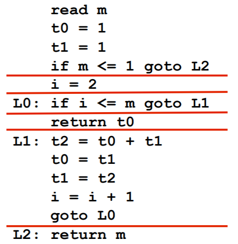
- Basic block 은 첫 Instruction 으로 flow 가 들어와서 마지막 instruction 으로 flow 가 나가는 단위를 말한다.
- 즉, 중간에
BRANCH로 빠져나가거나 다른곳에서부터JUMP로 들어오는 경우가 없는 코드 단위인 것.
- 즉, 중간에
- 구하는 알고리즘은:
- 첫 instruction 는 “leader” 이다.
JUMP의 종착지도 “leader” 이다.JUMP의 다음 instrunction 도 “leader” 이다.BRANCH로 점프하지 않는 경우에는 다음 instruction 이 실행되니까.
- 이렇게 “leader” 를 구하고 “leader” 부터 다음 “leader” 의 이전까지가 basic block 이다.
CFG (Control-Flow Graph)
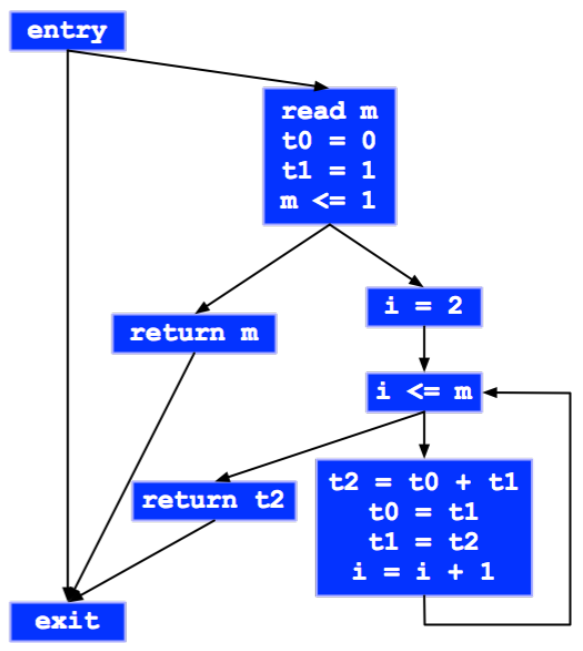
분석하기
- Control dependence 를 분석할 때는 basic block 간의 dependence 를 따진다.
- 가령 basic block A “바로 앞선” basic block B 의 실행 결과에 따라 실행될지 아닐지 결정되는 경우에 A 는 B 에 control dependence 가 있다고 한다.
- 즉, A 와 B 의 순서가 바뀌면 안되기 때문
- 연속되지 않은 basic block 의 경우에는 다음과 같은 경우에만 control dependence 가 있다고 한다:
- Basic block A 이후에 B 를 거치는 path 가 존재하고 거치지 않는 path 도 존재할 때
Instruction pipeline
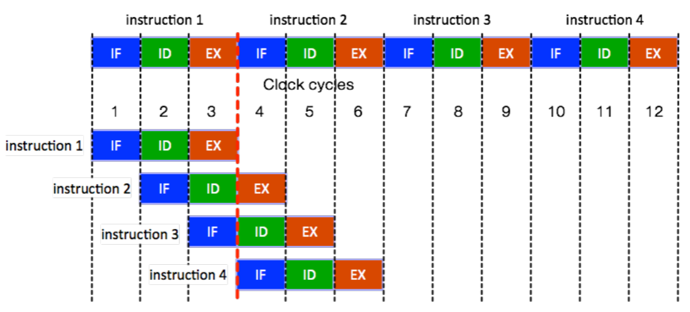
- Instruction pipeline 은 instruction throughput (CPU clock 당 실행되는 instruction 의 개수) 를 늘려주는 HW 적인 기술인데,
- 이것으로 인해 1 cycle 에 1 instruction 이 실행되는 것처럼 보이게 해준다.
- 간단히 살펴보면:
- Instruction cycle 은 다음의 세 step 으로 이루어진다: IF (instruction Fetch), ID (Instruction Decode), EX (Execute)
- 이때 각 step 은 실행에 1 cycle 이 걸리고, 독립적으로 실행될 수 있다.
- 독립적으로 실행될 수 있는 이유는 각각의 기능에 대해 CPU 내에 별도의 HW unit 이 있어서 dependence 가 없기 때문.
- 따라서 이들을 overlapping 해서 실행하는 것이 pipeline 이다.
- 그래서 1 cycle 에 1 inst 가 실행되는 것처럼 보인다.
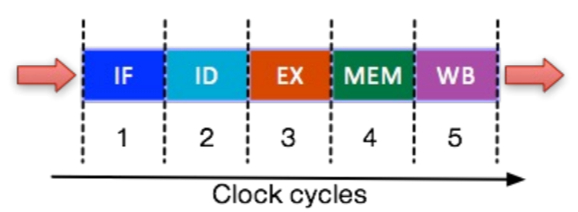
- 보통은 (RISC) 추가로 2개 step (MEM - Memory Access, WB - Register Write Back) 까지 해서 5단계로 나눈다.
- Register write 는 있는데 register read 는 없는 이유는 이것은 ID 단계에서 수행되기 때문.
- 이렇게 step 을 늘리면 CPU clock frequency 를 더 늘릴 수 있긴 하다.
- 다만 이건 RISC 기준이고, CISC 같은 경우엔 12 개 정도로 훨씬 많다
Pipeline hazard
- Pipeline hazard 는 현재 EX step 에 있는 instruction 의 다음 instruction 이 다음 clock cycle 에서 EX 단계에 진입하지 못하는 경우를 말한다.
Data hazard
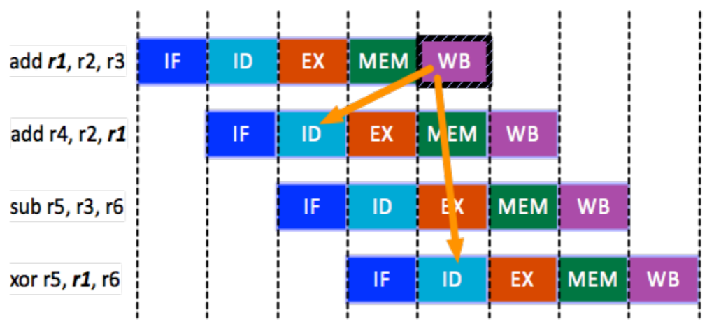
- Data hazard WB 단계에서 register 에 저장된 값을 다음 instruction 의 ID 에서 가져올 수가 없기 때문에 발생하는 문제
HW 적인 해결 방법
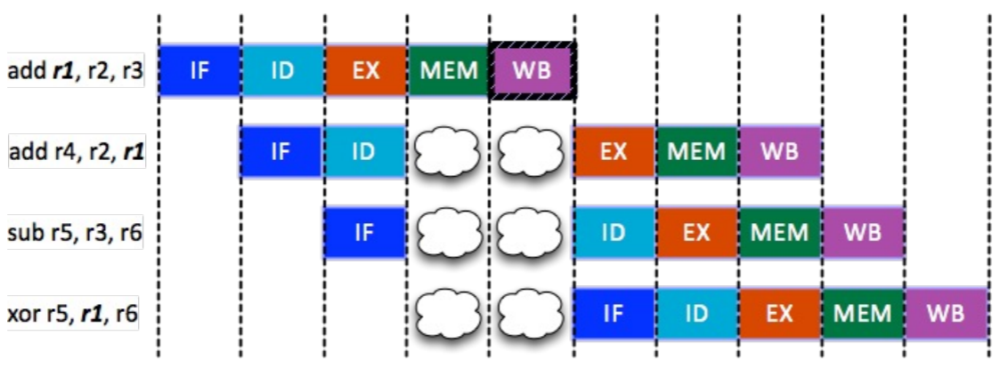
- Pipeline stalling: Bubble 을 추가해서 pipeline 을 잠깐 멈추는 (stall) 방법 (위의 그림)
- Data forward: 아니면 WB 까지 가지 않고 EX 다음에 바로 값을 ID 로 던져줄 수 있도록 회로를 설계
- 이 방법을 예시로 보면
- 위 예시에서 3 번째 cycle 에서 1 번째 instruction 이 EX 를 한 다음 이 값을 바로 ID unit 으로 던져서 2 번째 instruction 의 ID 단계에서 사용할 수 있게 하는 방법이다.
- 즉, 이 방법은 같은 cycle 에 있는 EX 와 ID 간의 충돌을 해결하는 방법이다.
- Transparent register file: WB 단계를 cycle 의 절반만 사용하게 해서 한 cycle 에서 1/2 cycle 동안 WB 이 write 를 하고, 나머지 1/2 cycle 동안 ID 가 read 를 하게 하는 것
- 위 예시에서는 5 번째 cycle 에서 1 번 instruction 의 WB 가 값을 쓰고, 같은 cycle 에서 4 번째 instruction 의 ID 가 값을 바로 읽어가게 하는 것.
- 즉, 이 방법은 같은 cycle 에 있는 WB 와 ID 간의 충돌을 해결하는 방법이다.
- 참고로 여기서 Register file 은 array of registers 를 말한다. 즉,
SW 적인 해결 방법
- 순서를 바꿔 dependence 가 없는 instruction 을 bubble 하는 대신 실행하거나 (Code Hoisting)
no-op이라는 bubble 과 동일한 역할을 하는 instruction 을 실행하는 방법이 있다.
Structure hazard
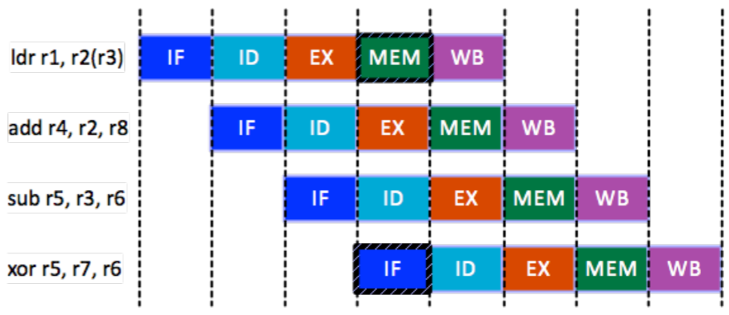
- Structure hazard 은 HW 를 여러 instruction 이 동시에 사용하고 싶어서 인데
- 쉽게 생각하면 이건 동일한 memory 공간에 두 instruction 이 동시에 접근하려고 하는 경우이다.
- 즉, MEM 에서 저장한 것을 IF 에서 접근하는 경우.
- 물론 근데 MEM 에 한정된 것은 아니다; Network port 을 사용하고자 하는 경우에도 동일한 문제가 발생할 수 있다고 한다.
- 이 경우에는 마땅한 방법이 없다; bubble 을 넣거나 resource 를 늘리는 것으로도 해결 가능하다고 한다.
Program Counter
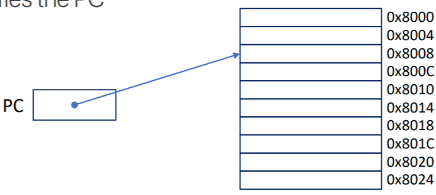
- PC 는 앞에서도 여러번 언급했지만
- 다음에 실행할 instruction 의 memory 주소를 저장하는 놈이다.
- CPU 는 VAS 를 바라보기 때문에, 당연히 이 주소도 virtual address 이다.
- 이놈은 IF 직후에 증가하며,
BRANCH에 의해서도 변경될 수 있다.
Control hazard
- 기본적으로 PC 는 그냥 sequential 하게 증가하지만,
BRANCH시에는 아무리 빨라도 EX 가 지나고 MEM 이 되어서야 PC 를 확정지을 수 있다. - 따라서 만약에 딴 basic block 으로
JUMP를 뛰어버리면, 이미 pipeline 에 올라왔던 instruction 들을 다 날려버려야 하는 문제를 Control hazard 라고 한다.
HW 적 해결방법은
- 그냥 bubble 을 넣거나
- Branch predictor 를 사용하는 방법이 있다.
SW 적 해결방법은
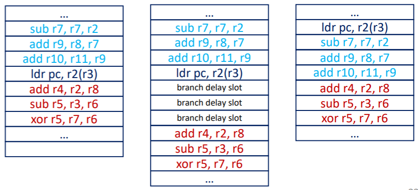
- Branch delay slot:
BRANCH했을 때 날라갈 수 있는 곳 (= Branch delay slot) 에BRANCH전의 instruction 들을 넣어 (어차피 실행해야 했던 애들이니까) jump 시에도 이 instruction 들을 flush 되지 않아도 되게 하는 방법이다. - 아니면 그냥 branch 를 최대한 안쓰게 program 을 작성하는 방법도 있다.
Execution ordering
- 일단 들어가기 앞서, EX 는 1 clock cycle 안에 끝나지 않을 수 있다는 것을 생각하자.
- ID 이후에 EX 를 위해 해당 연산에 맞는 Functional Unit 에 instruction 을 던져주는 것을 Dispatch 라고 하는데,
- 이때 어떤 작업을 하냐에 따라 EX 단계에서 소모하는 cycle 이 다를 수 있다.
- 당연히 FP 연산이 integer 연산보다는 느리다.
- 그럼 이때 instruction 들을 어떻게 실행할 것이냐.
In-order execution
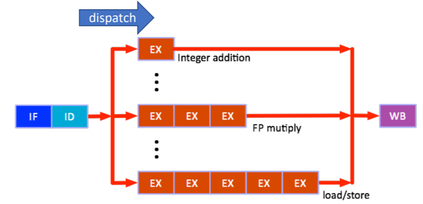
- In-order execution 은 EX 가 실행되고 종료되는 것의 sync 를 맞추는 것이다.
- 위 그림을 이해해 보자.
- 위 그림에서 각 직사각형은 1cycle 을 의미한다. 즉, integer addition 은 1cycle 만에 끝나고 FP multiply 는 3cycle, load-store 는 5cycle 이 걸린다.
- 이때, 먼저 load-store instruction 이 실행되고, 그 다음 integer addition instruction 의 순서로 실행된다고 해보자.
- 그럼 load-store 의 EX 가 2번째 cycle 에 진입했을 때, integer addition 이 막 ID 에서 빠져나와서 EX 되기 시작할 것이다 (즉, dispatch 된 것).
- 다음 cycle 이 되면, load-store 의 EX 는 3번째 cycle 에 진입할 테지만 integer addition 은 이미 종료된 상태일 것이다.
- 그럼에도 불구하고, 이 integer addition instruction 은 load-store 가 끝날 때 까지 계속 integer addition ALU 를 붙잡고 있는다.
- 즉, 만약에 이 뒤에 또 다른 integer addition instruction 이 들어온다고 해도, 실행되지 않고 기다린다 (즉, dispatch 되지 못한다).
- 이렇게 하는 이유는 load-store instruction 이 순서가 먼저이기 때문에 그 다음의 instruction 은 이것보다 먼저 끝날 수는 없기 때문.
- 즉, 앞선 instruction 의 EX 가 끝나기 전까지는 다음 EX 를 끝내지 않고, 만약 같은 연산의 경우에는 실행되지도 않는 방법이다.
Out-of-Order (OoO) execution
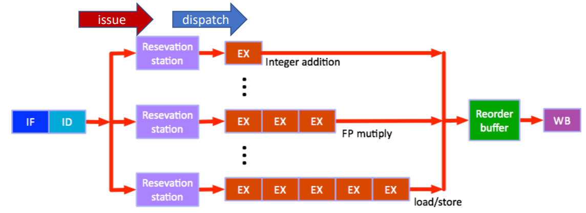
- 당연히 In-order execution 은 순서를 지키기 위해 EX 들이 실행되지 못하고 기다리기에 느릴 것이다.
- 이 문제를 해결하는 방법이 Out-of-Order (OoO) execution 이다.
- 여기서는
- 일단 IF 와 ID 는 원래의 instruction 순서를 따라간다.
- 그리고 instruction 의 실행이 종료되는 WB 도 instruction 의 순서를 따라간다.
- 이외의 이 중간과정은 순서가 바뀔 수 있다.
- 이렇게 진행된다.
- ID 이후에 Functional Unit 마다 존재하는 Reservation Station 이라는 일종의 run queue 같은 곳에다가 instruction 을 바로바로 던진다.
- 이렇게 ID 를 지나 reservation station 에 던지는 것을 Issue 라고 한다.
- 그리고, 해당 Functional Unit 은 순서를 맞추기 위해 기다리는 것 없이 이 reservation station 에서 instruction 을 바로바로 꺼내서 실행한다.
- 그럼 순서가 뒤죽박죽이 될 텐데, 이때 Reorder buffer 가 다시 순서를 맞춰서 WB 로 넘긴다.
- ID 이후에 Functional Unit 마다 존재하는 Reservation Station 이라는 일종의 run queue 같은 곳에다가 instruction 을 바로바로 던진다.
- 이것을 Tomasulo’s algorithm (IBM360/91) 이라고 한다.
- 여기서는 in-order issue, commit 을 하고 ooo dispatch, execution 을 한다고 한다.
- 사실 in-order 와 OoO 의 하이브리드라고 하는데, 잘 모르겠음: 이게 위의 OoO 와 똑같은거 아닌가
- 여기서 사용되는 용어중에 Retirement (Graduation) 라는 것이 있는데,
- Instruction 이 commit 되거나
- 예외상황이 생겨 instruction 이 취소되는 경우 해당 instruction 의 reorder buffer slot 이 비워지고 이때를 retirement (graduation) 라고 한다.
Superscalar Processor
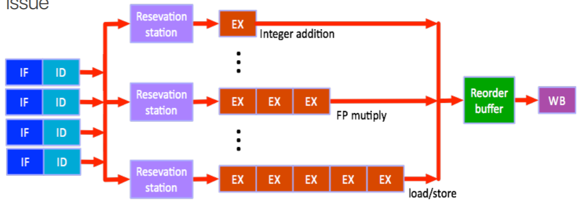
- 용어정리를 해보자
- Scalar 는 한번에 하나의 data 에 대해, 하나의 instruction 을 실행하는 것이다 (Single instruction, single data).
- Vector 는 한번에 여러 data 에 대해, 하나의 instruction 을 실행하는 것이다 (Single instruction, multiple data)
- Superscalar 는 말 그대로 scalar 가 여러개 있는 것이다. 즉, 한번에 여러 data 에 대해 여러 instruction 을 실행하는 것 (Multiple instruction, multiple data).
- Superscalar Processor 는 이런 superscalar 를 지원하는 processor 로, 한번에 여러 instruction 에 대해 IF-ID 를 수행한다.
- 즉, 여러 instruction 이 issue 된다.
- 이런 superscalar 를 활용하여 병렬연산하는 것을 Instruction Level Parallelism (ILP) 라고 한다.
- 이와 비슷하게, 여러 instruction 을 하나로 묶은 큰 instruction 하나를 issue 해 superscalar 와 같은 느낌을 내게 하는 방법도 있다.
- 이것을 VLIW (Very Long Instruction Word) 라고 하는데.
- 옛날에는 intel 과 HP 에서 개발해서 팔아먹었는데 요즘은 안쓴다.